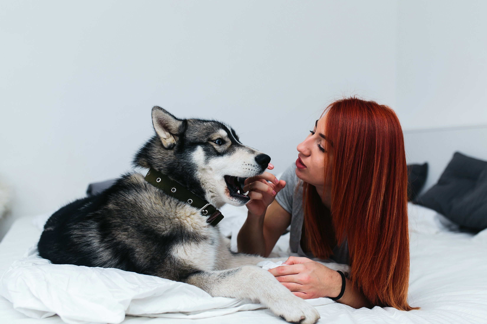

Köpek Eğitimi: Sadık Dostunuzla Doğru İletişim Kurmanın Yolları

Köpek eğitimi, köpeğinizle daha iyi bir ilişki kurmanın ve onun mutlu, uyumlu bir birey olmasını sağlamanın en önemli yollarından biridir. Eğitim, yalnızca komut öğretmekten ibaret değildir; aynı zamanda güven, disiplin ve sevgiye dayalı bir iletişim biçimidir. İşte köpek eğitimi hakkında bilmeniz gereken temel noktalar:
1. Eğitimde Erken Başlangıç: Yavru Döneminin Önemi
Yavru köpekler öğrenmeye açık ve meraklıdır. Bu dönemde verilen eğitimler, köpeğinizin temel davranışlarını şekillendirir.
Tuvalet eğitimi: Yavru köpeğinizi düzenli olarak dışarı çıkararak doğru alanları öğrenmesini sağlayabilirsiniz. Sabırlı olun ve başarılı olduğunda ödüllendirin.
Sosyalleşme: Yavruyken diğer hayvanlar ve insanlarla tanışması, ileride güvenli ve sakin bir köpek olmasını sağlar.
2. Pozitif Pekiştirme Yöntemi
Köpekler, ödüllerle teşvik edildiğinde öğrenmeye daha açıktır.
Ödüller: Sevdiği yiyecekler, oyuncaklar ya da sevgi dolu bir okşama, iyi davranışları pekiştirmek için kullanılabilir.
Sabır ve tekrar: Köpekler her komutu hemen öğrenmez. Sabırlı olun ve eğitimleri düzenli olarak tekrar edin.
3. Temel Komutlar: İtaat Eğitiminin İlk Adımları
Köpeğinize temel komutları öğretmek, hem güvenliğini sağlamak hem de günlük hayatta kolaylık sağlamak açısından önemlidir.
"Otur": Basit ve kullanışlı bir komuttur. Komutu başarıyla yerine getirdiğinde ödüllendirin.
"Bekle" veya "Dur": Özellikle tehlikeli durumlarda hayat kurtarıcı olabilir.
"Gel": Çağrıldığında yanınıza gelmesi, köpeğinizin kontrol altında kalmasını sağlar.
4. Olumsuz Davranışları Yönetmek
Köpeğiniz istenmeyen bir davranış sergilediğinde sakin ve kararlı bir şekilde tepki verin.
Bağırmaktan kaçının: Olumsuz tepkiler, köpeğinizde korkuya neden olabilir ve öğrenme sürecini zorlaştırabilir.
Alternatif sunun: Örneğin, çiğnememesi gereken bir eşyayı bıraktığında, çiğneyebileceği bir oyuncak verin.
5. Eğitimde Süreklilik
Eğitim, bir kerelik bir süreç değildir. Köpeğinizin öğrendiklerini pekiştirmek için düzenli olarak çalışmaya devam etmelisiniz.
Kısa ve eğlenceli seanslar: Eğitim seanslarını 10-15 dakikayı geçmeyecek şekilde planlayın.
Tutarlılık: Aynı komutları ve ödülleri tutarlı bir şekilde kullanın.
6. Profesyonel Yardım Almayı Düşünün
Bazı durumlarda, özellikle ileri düzey eğitim ya da davranış sorunlarıyla baş etmek için bir profesyonelden yardım almanız gerekebilir. Profesyonel eğitmenler, sizin ve köpeğinizin ihtiyaçlarına uygun bir program oluşturabilir.
7. Sevgi ve Sabır: Eğitimin Temeli
Unutmayın, köpeğiniz sizin sabrınızı ve sevginizi hisseder. Eğitim sürecini bir zorunluluk olarak değil, aranızdaki bağı güçlendiren keyifli bir süreç olarak görün.